Building HoloLens Apps with Unity
Overview
Windows Holographic is a platform that enables software developers to build immersive 3D holographic applications that combine the real world with virtual worlds. Traditional virtual-reality (VR) platforms immerse users in a world that replaces the world around them. Windows Holographic is a mixed reality (MR) platform that injects three-dimensional computer-generated content into the world surrounding you and lets you interact with that content. Imagine learning how a jet engine works by walking around a virtual jet engine floating in the room in front of you, watching the parts rotate and gases flow through the turbine blades, and waving a hand to peel away layers to reveal what's inside. That is mixed reality. And it is just one example of the kinds of experiences that Windows Holographic makes possible.
Microsoft's HoloLens, pictured below, is a Windows Holographic device that represents the leading edge of mixed-reality hardware. This first-generation device is targeted towards software developers and MR enthusiasts. It is the world's first self-contained holographic computer, and it enables users to engage with digital content and interact with holograms. Worn like a set of glasses, it lets the real world come through while enhancing that world with holographic objects.
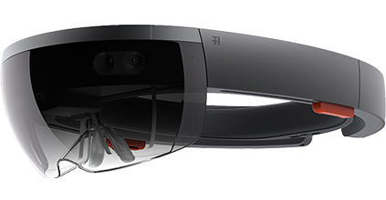
There are multiple ways to build applications for Windows Holographic, including accessing the low-level APIs directly. Rather than write to the APIs directly, most developers choose to use Unity instead. Unity abstracts the underlying APIs and provides a rich environment for building and testing holographic apps. Supplemented by a vibrant ecosystem that includes an Asset Store and an active community of developers, Unity is also available in several editions, including a Personal Edition that you can use for free.
In this lab, you will use Unity and Visual Studio to build a holographic application, experience mixed-reality first-hand, and see what it takes to build apps for Microsoft HoloLens. You can run the app in Microsoft's HoloLens emulator, or run it on a real device if you have access to a HoloLens. Obviously, the latter provides a higher-fidelity and more immersive experience.
Objectives
In this hands-on lab, you will learn how to:
- Configure HoloLens for application development
- Install and configure a development environment for building holographic applications
- Create a Unity project and configure it to support Windows Holographic
- Add objects to a scene and attach scripts to make them interactive
- Deploy to a HoloLens and make the scene come alive
Prerequisites
The following are required to complete this hands-on lab:
- A PC with 64-bit Windows 10 (Home Edition is not supported) and a 64-bit CPU with at least 4 cores
- At least 20 GB of available disk storage
- At least 8 GB of RAM
- BIOS features (must be enabled): Hardware Virtualization, SLAT, DEP
- DirectX11 or later
- WDDM 1.2 driver or later
- Hyper-V enabled in Windows
- Visual Studio 2015 with the Windows 10 SDK installed
In addition, a HoloLens Development Edition visor is recommended by not required.
Recommendations
While developing applications for the Windows Holographic platform is relatively straightforward, there are some pitfalls you should avoid. The following recommendations can help make the development experience more enjoyable:
- Use a modern PC or laptop for holographic application development. Unity takes a designer-centric approach, and is a fairly demanding environment (just as your favorite video editing software is likely much more performance-intensive than your favorite code editor).
- Run the latest version of Windows 10 and the Windows SDK, but avoid pre-release versions of Windows.
- Do not try to develop for HoloLens from within a virtual machine (Hyper-V or otherwise).
- Be sure to have a decent video graphics adapter in your system, with the latest stable display drivers installed. Video driver glitches are one of the most common causes of problems encountered when building holographic apps.
- If you choose to edit code in Visual Studio, be sure to keep it updated with the latest patches, and use as few third-party extensions as possible.
- When possible, test your applications on real HoloLens hardware. The emulator is useful, but performs very differently from a real device and gestures are not very natural on the emulator.
- Even if you do not plan to use the HoloLens emulator, it is recommended that you install it. The installer for the emulator includes DirectX project templates for Visual Studio that can be very useful.
Exercises
This hands-on lab includes the following exercises:
Estimated time to complete this lab: 60 minutes.
Exercise 1: Set up your development environment
In this exercise, you will prepare your development environment so you can build applications for the Windows Holographic platform with Unity.
-
If you haven't already, download and install the latest release of Visual Studio from https://www.visualstudio.com/vs/. Any version will do, even the free Community Edition. Be sure to install the Universal Windows App Development Tools, since HoloLens apps are Universal Windows Platform (UWP) apps.
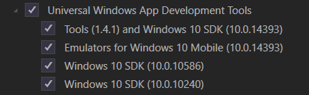
Installing UWP tools when installing Visual Studio
-
Launch Visual Studio and select Options... from the Tools menu. Under the General settings for NuGet Package Manager, ensure that Allow NuGet to download missing packages and Automatically check for missing packages during build in Visual Studio are both checked. Your Unity builds will fail later if these features are not enabled.
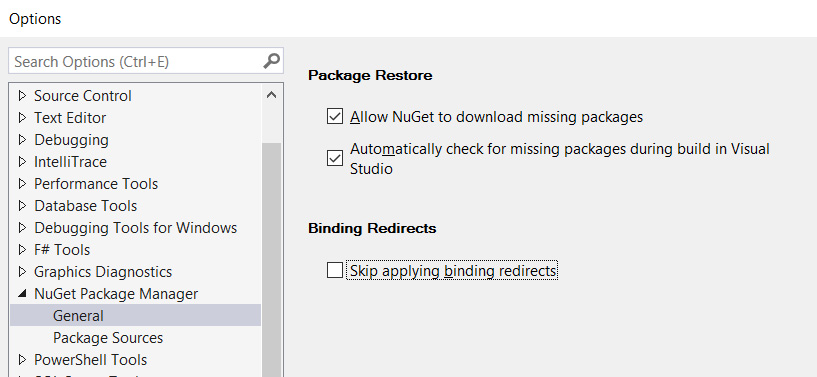
Enabling NuGet options
-
Download and install the latest version of the HoloLens emulator package. You will find a link to the current release in the Installation checklist on Microsoft's HoloLens developer portal.
The emulator isn't strictly necessary if you have a HoloLens available, but the installation package also comes with additional app templates. Also, the emulator allows you to simulate a specific room interior (captured from an actual device beforehand), which can be quite useful in certain scenarios.
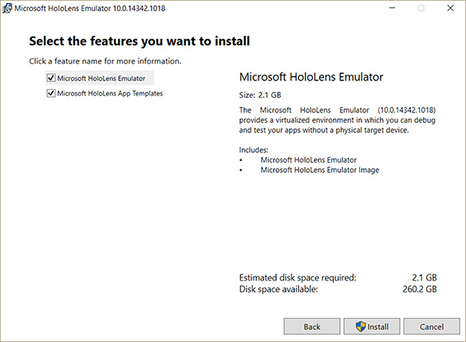
Installing the HoloLens emulator
-
Download and install the latest release of Unity from https://unity3d.com/unity. The free Personal Edition will work just fine while you are learning.
If you have worked with Unity and HoloLens previously, you may recall needing to download a special build. HoloLens support is now fully integrated into Unity, so you no longer need to do that. The "normal" release version is sufficient now.
-
You must have a Unity account to sign in to Unity. Go to https://id.unity.com/en/conversations/41750435-f67a-4881-a6e5-5dec3c05f731019f and create an account if you do not already have one.
Your development environment is now configured. If you have a HoloLens device, proceed to Exercise 2. Otherwise, skip to Exercise 3.
Exercise 2: Configure your HoloLens
In this exercise, you will configure your HoloLens and pair it with your PC. It is assumed that you are familiar with basic HoloLens gestures such as "blooming" to open the Windows Start menu and "air tapping" to select items on the screen in front of you. If you aren't familiar with these gestures, read up on them at https://support.microsoft.com/en-us/help/12644/hololens-use-gestures.
-
Don your HoloLens visor and power it on.
-
On the HoloLens, log in to Windows. Launch the Settings app, and select Update & Security.
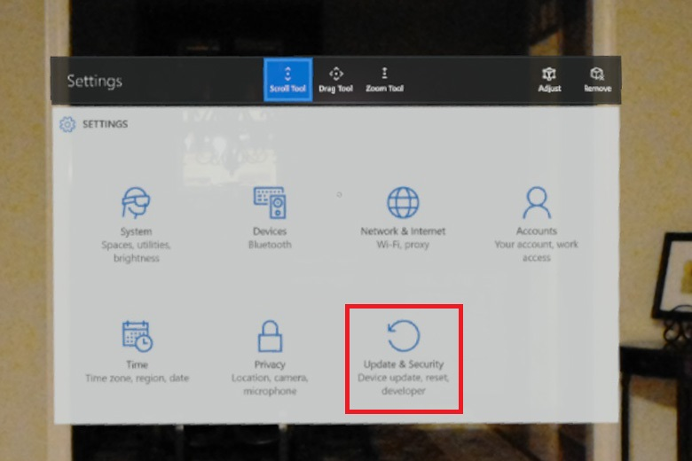
Opening Update & Security settings
-
Select For developers, and make sure Developer mode is toggled on. Then scroll to the bottom of the page and make sure Enable remote management of this device from a browser is turned on, too. This will enable you to deploy apps to your HoloLens as well as activate a built-in Web portal on the device.
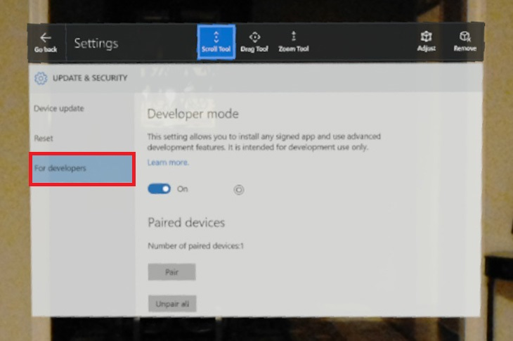
Enabling developer mode on the device
-
Next, you need to create a login for your device. Connect the HoloLens to your Windows PC using a USB cable. Then browse to http://127.0.0.1:10080 on your PC.
-
When presented with a setup page that asks you to request a pin, click the Request pin button.
If you've previously paired your HoloLens to your PC, you will instead be prompted for a user name and password. Once logged in, you can add credentials by clicking the Security icon in the upper right corner of the page.

Requesting a PIN
-
On the HoloLens display, you should now see a seven-digit PIN code.
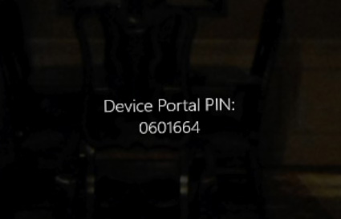
The requested PIN
-
Enter this PIN code on your PC, along with a user name and password. Then click the Pair button. The user name and password you enter will be used to access the device portal when debugging apps, so it is important not to forget them. The only way to recover them is by performing a full reset of the HoloLens.
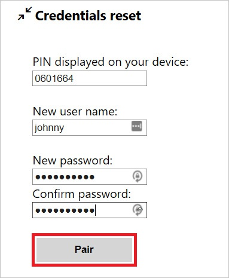
Pairing the HoloLens with your PC
-
Spend a few minutes exploring the device portal. You will find a number of useful features here, including diagnostic information. One page that is especially useful is the "Mixed Reality Capture" page, which allows you to capture images and videos depicting what the person wearing the HoloLens is seeing. You can even view a live stream of their video and audio (delayed by a second or so).
You can access the device portal via http://127.0.0.1:10080 while connected via USB, but you can also connect via Wi-Fi. After joining a Wi-Fi network on the HoloLens, find your device's IP Address in the Network Settings (or ask Cortana "Hey Cortana, what is my IP address?"). As long as your Windows PC is on the same Wi-Fi network, you can access the portal through that IP address.
With the HoloLens hardware configured, you are now ready to start building an application.
Exercise 3: Build your first holographic application with Unity
In this exercise, you will create a new Unity project and configure it to target the Windows Holographic platform. In the next exercise, you will learn how to automate much of this process. Doing it manually the first time helps you understand what's happening and why.
-
Launch Unity and sign in with your Unity Account.
-
Click + New to create a new project. Enter any project name that you like. Make sure 3D is selected, and then click the Create project button.
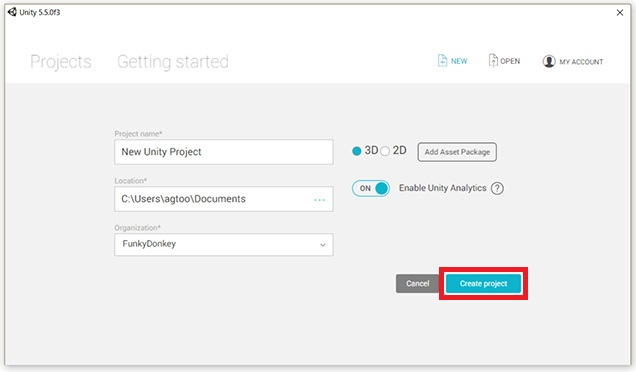
Creating a new Unity project
-
Every holographic application needs a viewpoint to represent the person who is wearing the HoloLens visor. This is handled with a Camera object. Your empty project should have a camera, but if it doesn't, then you will need to create one.
In the Hierarchy panel, expand the top-level node (it should be named "Untitled"). If there is already an object there named "Main Camera," then proceed to the next step. Otherwise, select Camera from the GameObject menu to create a new camera.
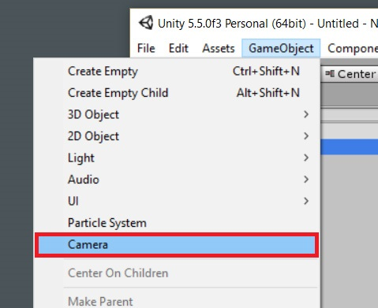
Creating a new camera
-
The camera must be configured correctly for the holographic application to function properly. Go to the Inspector tab docked to the right side of the Unity IDE. In the Tag drop-down, select MainCamera.
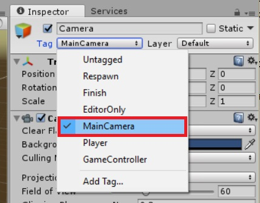
Selecting the main camera
-
In the Clear Flags drop-down, select Solid Color.
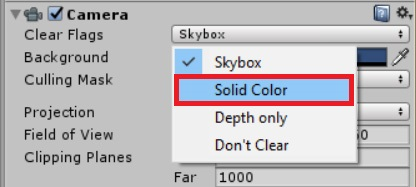
Configuring the Clear Flags
-
Change Background to solid black using the Color popup.
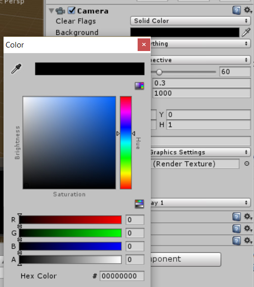
Setting the camera background
-
Click the gear icon in the upper-right corner of the panel, and select Reset from the context menu to reset the camera position 0, 0, 0.
It is a good habit to always reset the position of any new elements added to your scene so that each has a known starting position.
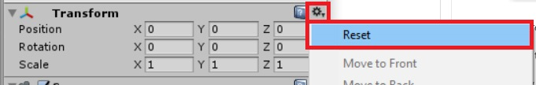
Resetting the camera position
-
Lastly, set Near Clipping Plane to 0.85 meters rather than the default of 0.3. This value determines how close you can get to an object before it gets clipped out of view. (Otherwise, you would see the "insides" of objects if you walked through them).

Setting the distance to the near clipping plane
-
With the main camera properly configured, you now need to configure the project's build settings. Select Build Settings... from the File menu.
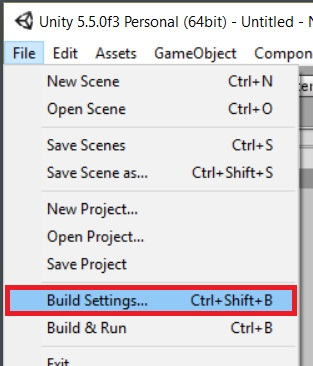
Accessing build settings
-
In the list of platforms, select Windows Store and then click the Switch Platform button.
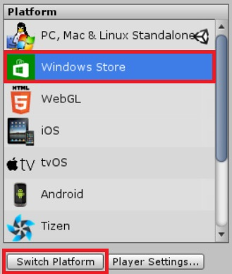
Switching build platforms
-
With Windows Store still selected in the list, make the following changes to the settings in the panel next to it:
- Set SDK to Universal 10
- Set UWP Build Type to D3D
- Check the Unity C# Projects box (this enables Visual Studio editing)
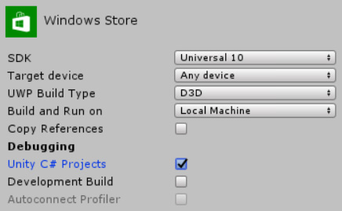
Changing platform settings
-
Click the Player Settings... button under the list of platforms. This will open a new region within the Inspector panel. Click Publishing Settings in the Inspector panel to display the project's publishing settings.
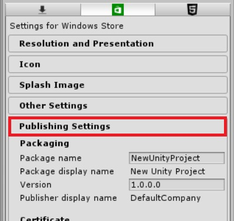
Viewing publishing settings
-
Scroll to the end of the Publishing Settings pane, where you will find a Capabilities list. This is where you declare any capabilities that your application requires. SpatialPerception and Microphone are common requirements, so check those. Also check InternetClient so you can run the app in the HoloLens emulator.
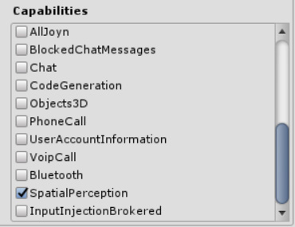
Specifying the app's capabilities
-
Find the Other Settings pane in the Inspector panel and expand it. Then check the Virtual Reality Supported box. Upon selecting this option, a list of Virtual Reality SDKs should appear below. Verify that Windows Holographic appears in that list. (It will likely be the only entry in the list.)
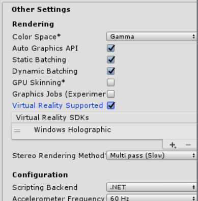
Specifying other settings
-
From the Edit menu, select Project Settings and then Quality. This will open a new region named "QualitySettings" within the Inspector panel.
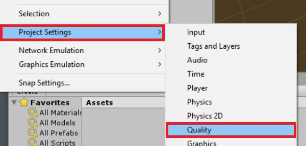
Accessing quality settings
-
In this region, there is a matrix of options that you might be tempted to select. Do not select anything. Instead, notice that the header row in the matrix contains small platform icons. The green box is a miniature version of the Windows Store logo; it is usually the center column of the matrix. At the bottom of each column is a small triangle. Click the triangle under the Windows Store column, and then select Fastest from the ensuing menu.
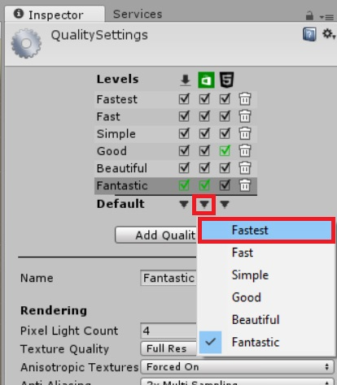
Setting the quality level
-
You should now be able to add content to your application in Unity, along with any scripts required for interaction. Save the open scene (don't forget to add the newly saved scene to the "Build Settings" dialog), and then build the resulting project.
Congratulations! You've created and built a Unity project that supports the Windows Holographic platform. Of course, there's no content in this project yet, and there is a better way to get started on a new project without having to manually apply all these settings. Let's learn how to automate these steps by using HoloToolkit.
Exercise 4: Use HoloToolkit to expedite holographic development
In this exercise, you will create a new project and use HoloToolkit to streamline the project setup.
-
Download or clone the HoloToolkit repository from GitHub to your local Windows PC. The repository can be found at https://github.com/Microsoft/HoloToolkit-Unity. This package is updated frequently, and you want to use the latest and greatest.
-
Open the downloaded HoloToolkit project folder in Unity.
-
In the Project pane, select the "Assets" folder at the root of the project. Right-click the folder and select Export Package.... Be sure to export the entire "Assets" folder, including dependencies.
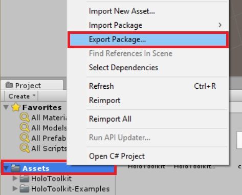
Exporting project assets
-
Enter a name and location for the exported package file. The package can be reused in other projects, so it is a good idea to save it outside of your project folders. It is also advisable to include the current date in the package's file name so you are always aware of how old the package content is.
-
Click + New and create a new Unity project. From the Assets menu, select Import Package and then Custom Package....
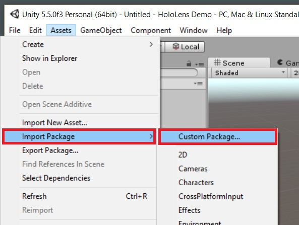
Importing HoloToolkit
-
Select the package file that you exported in Step 3, and click the Open... button.
-
Unity gives you the option of selecting which assets to import. In this case, you can unselect the "HoloToolkit-Examples" subtree to reduce the size of the code base. Once you've specified which assets to include, click the Import button.
This imports a number of useful assets, some of which you will use in Exercise 6. It also adds a new top-level menu item to the Unity editor that provides quick access to some frequently performed actions. You will make use of these shortly.
-
Find the default Main Camera in the project's starting scene. Right-click it and select Delete to delete it.
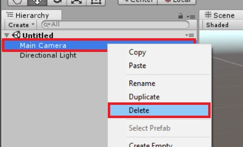
Deleting the default main camera
-
In the Project panel, expand the "Assets" folder to expose the subfolder named "HoloToolkit." Expand again to find the "Input" and "Prefabs" folders. Then drag HoloLensCamera.prefab and drop it over the main scene node in the Hierarchy treeview. This camera is preconfigured to function properly in a HoloLens application. Remember to reset the camera after placing it. (See Exercise 3, Step 7 to remind yourself how to do it.)
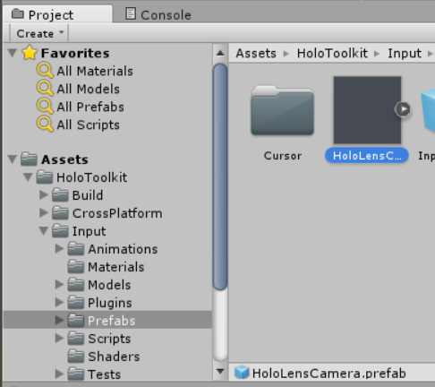
Adding a prefab main camera
-
From the HoloToolkit menu, select Configure, and then select Apply HoloLens Scene Settings.
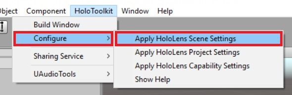
Configuring HoloToolkit
-
Repeat this sequence, but this time select Apply HoloLens Project Settings (you may be prompted to reload the project).
-
Repeat one more time, but this time select Apply HoloLens Capability Settings.
You may also need to manually enable the Unity C# Projects build setting. These menu commands don't seem to always set this option properly.
-
From the HoloToolkit menu, select Build Window. From here, you can directly export a Visual Studio solution and also launch Visual Studio with the exported solution. It is also possible to compile an APPX package and deploy it directly from this dialog, but this is not as common as compiling and deploying from Visual Studio.
-
Click the Build Visual Studio SLN button to export the Unity project to Visual Studio.
You only need to click the Build Visual Studio SLN button when non-script assets have changed. Script changes are automatically kept in sync between Visual Studio and Unity.
-
Click the Open SLN button to launch Visual Studio with the exported solution.
You now know how to configure a holographic project manually, and how to expedite the process with HoloToolkit. The latter provides some additional benefit in the form of prefabricated components that speed the development process. With the project set up, it is now time to build it so you can see it come to life.
Exercise 5: Compile in Visual Studio and deploy to a device
In the previous two exercises, you learned two different ways to configure a new holographic project in Unity. In this exercise, you will learn how to use Visual Studio to compile the apps that you create and run them on your HoloLens.
-
In Unity, open either of the projects you created in the previous exercises.
If you opened the HoloToolkit project, then you can use HoloTookit's Build Window command in place of Steps 2 through 4.
-
Select Build Settings... from the File menu.
Opening build settings
-
Click the Build button. You will be prompted to select the output folder in which Unity will place a Visual Studio solution. You should create a folder under your project for this.
Unity generates two Visual Studio solution files: one in the main project folder and one in the output folder. Ignore the .sln file in the main project folder.
-
Start Visual Studio and open the .sln file created in the output folder in the previous step.
This solution contain three projects. You can generally ignore the one named "Assembly-CSharp-firstpass." The project named "Assembly-CSharp" contains the script behaviors that are attached to elements in the Unity project, and the third one is the project for the app itself.
-
Verify that your main application project — the one with the same name as your Unity project — is set as the startup project in Visual Studio. If it isn't, right-click the project and select Set as Startup Project from the context menu.
-
Verify that Visual Studio is set to produce a Debug build for the x86 platform with Device as the target.
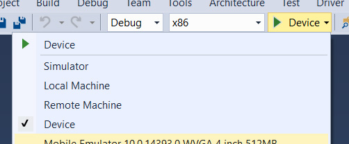
Setting the Visual Studio build configuration
Selecting Device assumes that your HoloLens is connected via USB. If you wish to deploy and debug over WiFi, select Remote Machine instead and input the IP address of your HoloLens.
-
Press F5 or select Start Debugging from the Debug menu to compile, deploy, and launch the application.
If this is the first time deploying to this HoloLens, Visual Studio will prompt you for a PIN code. You can obtain this PIN from the HoloLens device, from the settings page where you enabled Developer mode in Exercise 2. Click the Pair button to generate a PIN code for Visual Studio.
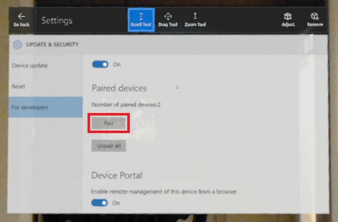
Pairing with Visual Studio
-
If everything goes well, Visual Studio will compile and deploy the application and then launch it. Because this application has no content yet, the only indication you will get from the HoloLens will be the Unity splash logo that appears because you are using the free edition of Unity.
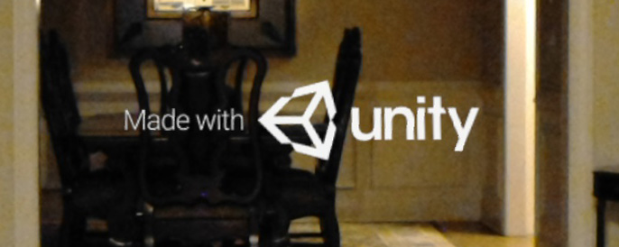
The app running on a HoloLens
If you encounter build errors, first ensure that automatic NuGet package restore is enabled in Visual Studio (see Exercise 1, Step 2). You can also try selecting Clean All from Visual Studio's Build menu, and then building the "Assembly-CSharp-firstpass" project by itself, followed by the "Assembly-CShar" project, and then the main application project. Sometimes, the build dependencies fail to resolve properly and manually rebuilding this way resolves the problem.
If your build is successful but you don't see anything in the HoloLens or in the emulator, double-check the configuration steps in Exercise 2 or Exercise 3. Just one missing setting, such as failing to enable Holographic SDK support, can prevent the app from working.
With a starter holographic project in place, you are now prepared to move on to the final exercise in this lab and add an interactive hologram to the scene.
Exercise 6: Add an interactive hologram
One of the strengths of the Unity platform is that it offers a large array of pre-built models and artwork that you can leverage within your projects. These resources can be found in the Unity Asset Store and loaded directly from the Unity environment. Many of these assets are available for a modest price, but there are also many available for free. In the final exercise, you will download a fountain hologram from the Asset Store, attach a particle system, and write code to allow users to click or tap the fountain to turn a water spout on and off.
-
In Unity, search the Asset Store for free "fountain" models. Find the one named "Fountain Prop" and click the Download button to download it to your project.
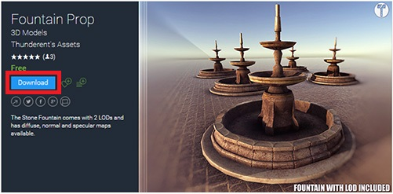
Downloading the "Fountain Prop" model
-
After the download completes, you will see a new folder named "Stone Fountain" in the "Assets" folder in Project Explorer. In this folder, you should see a prefab item named "fountain_LOD0." Drag the item over and add it to the scene hierarchy to add an instance of the fountain model.
-
In the Transform section of the Inspector panel, set X, Y, and Z Position to 0.0 to position the fountain in the center of the scene. Then set X, Y, and Z Scale to 0.5 to scale the model down and make it easier to work with.
-
The center of the scene isn't necessarily the best spot for the fountain, since you would literally be standing inside of it. So drag the fountain until the Y position is roughly -1.5 and the Z position is roughly 2.75. This will place the object slightly in front of the viewer and slightly below eye level.
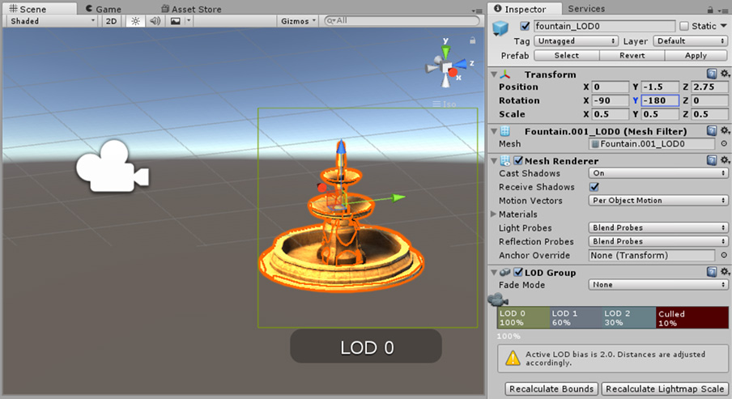
Repositioning the fountain
-
In order to interact with the fountain, you need to add components to handle gaze in order to provide visual feedback when the user "gazes" at the fountain. Gaze is an important form of input in Windows Holographic because it tells you where the user is looking and helps you determine their intent. Luckily, HoloToolkit comes with some prefabs for this. Find the "DefaultCursor" prefab in the "Assets\HoloToolkit\Input\Prefabs" folder, and add it to the scene.
-
The "DefaultCursor" prefab relies on there being a GazeManager in the scene (among other things). GazeManager is a singleton object that keeps track of where the Gaze cursor is pointing. The project currently lacks a GazeManager, but you can add one by adding an "InputManager" prefab, which contains a GazeManager subcomponent. Find the "InputManager" prefab in the "Assets\HoloToolkit\Input\Prefabs" folder and add it to the object hierarchy.
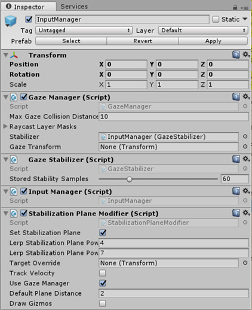
Adding the InputManager and subcomponents
-
When the fountain is clicked, you will turn on a particle system to simulate water shooting from the top of the fountain. To do this, you need to write code to respond to click events.
In Unity, such code is encapsulated in scripts and attached to game objects. These scripts are C# files that are linked to one or more objects in Unity, and later edited and compiled in Visual Studio (or MonoDevelop for non-HoloLens projects where Visual Studio integration is not enabled). Unity scripts are simple in nature. Each contains a class that is instantiated as a child component of the game object that the script is attached to. These classes inherit from the MonoBehavior base class, and they are allowed to communicate with other game objects as well as call Unity APIs. In this case, the script should be attached to the fountain object.
To create a script, click the fountain model in the scene's object hierarchy. In the Inspector panel, scroll to the bottom, click the Add Component button, and select New Script. Type "Fountain" for the script name, and then click the Create and Add button to create the script and attach it to the fountain.
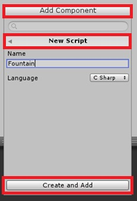
Adding a script to the fountain
If you now look in your project's "Assets" folder, you will find a script file named Fountain.cs. You can double-click the file to open it in Visual Studio, but if you do, you will find that Intellisense doesn't work. The fix is to re-export the project files and open the exported solution in Visual Studio.
Keep in mind that as you edit script files in Visual Studio, your code changes are applied to the original script files that Unity is using. This means that you only need to re-export the solution from Unity when the assets change (for example, when new objects are added to the scene) or when you create a new script. You do not need to re-export the solution when you modify an existing script.
You can organize your scripts and assets into any folder structure you prefer. Unity will keep track of where you move them to, and your objects will retain their links to the scripts even after you've reorganized them.
-
Export the solution from Unity, and open it in Visual Studio.
-
The template for new scripts provides the scaffolding for the MonoBehavior-based class. By default, Unity includes Start and Update methods in the derived class. The Start method is where you place code that needs to run each time an instance of the associated game object is created. The Update method is called much more often — once per frame. To respond to clicks (technically, taps) you implement the IInputClickHandler interface and its lone method, OnInputClicked.
Open the Fountain.cs file containing the script for the fountain and replace its contents with the following code:
using System;
using UnityEngine;
using HoloToolkit.Unity.InputModule;
public class Fountain : MonoBehaviour, IInputClickHandler
{
public void OnInputClicked(InputEventData eventData)
{
var gaze = InputManager.Instance.GetComponent<GazeManager>();
if (gaze.IsGazingAtObject && gaze.HitObject == gameObject)
{
Debug.Log(gameObject.name + " clicked");
}
}
// Use this for initialization
void Start ()
{
}
// Update is called once per frame
void Update ()
{
}
}
-
Build the application and run it on your device or in the emulator. The fountain should be visible, and the Gaze cursor should be functional. However, you will notice if you click the fountain, the script doesn't register clicks in the debug output window. Terminate the app in Visual Studio and return to Unity.
-
In order for gestures (and the built-in physics engine) to recognize and interact with objects, those objects need to have a collider attached to them. Some objects come with an attached collider (the Cube is one such example), but the fountain that you imported does not.
Select the fountain object, click the Add Component button in the Inspector panel, and select Mesh Collider in the Physics submenu. This will allow Unity to recognize the complex mesh of the fountain as a collision target.
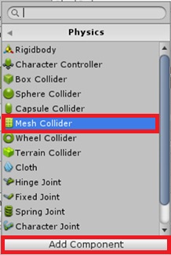
Adding a mesh collider to the fountain
-
Check the Convex box in the mesh collider so the particle system can use the same collider.
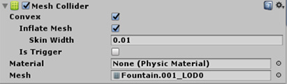
Configuring the mesh collider
-
Save the project, export to Visual Studio, and then build and run the application again. Confirm that tapping the fountain now registers clicks in the debug output window.
-
Now it's time to add a particle system to shoot water from the top of the fountain. To begin, return to Unity, select the fountain object, and then right-click it and select Create Empty from the ensuing menu. This will create an empty game object as a child element of the fountain object. Change the Z Position of the new game object to 2.98 or thereabouts so that it is positioned just above the top of the fountain.
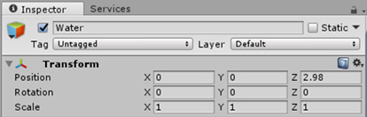
Positioning the water outlet at the top of the water fountain
-
Select the new game object and click Add Component in the Inspector panel. Then select Particle System from the Effects submenu.
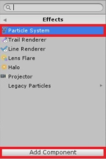
Adding the particle system
-
In the settings for the particle system, make a few modifications:
- Set the Start Lifetime to 2 and the Start Speed to 1.2
- Set the Start Size to 0.04
- Enable Looping and Prewarm
- Set the Gravity Modifier to 0.8
- Select a bluish or greenish tint for the Start Color
- Set the Shape to Cone, the Radius to 0.01 and Angle to 17.0
- Set the Render Mode to Mesh and select Sphere as the type of Mesh
- Choose a Material for the Renderer - Default-Material is a reasonable place to start
- Enable the Collision settings, and set the Collision Mode to 3D
- Change the Dampen setting to 0.6 and Bounce to 0.7
- Set Collides With to Everything, change Collision Quality to Medium, and reduce Voxel Size to 0.25
TIP: These are just suggestions — feel free to experiment with different settings!
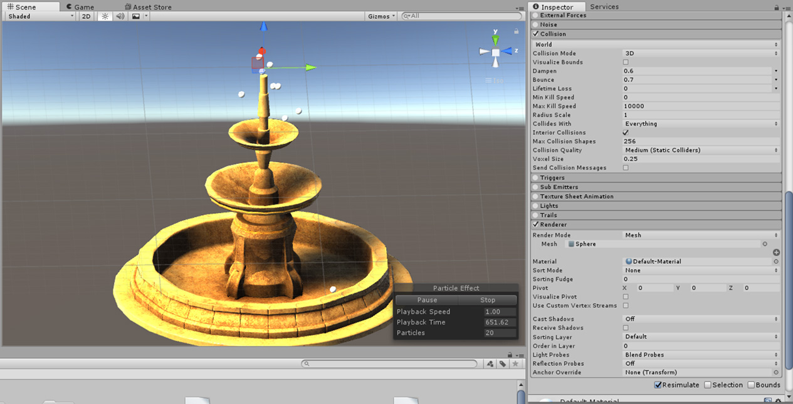
Configuring the particle system
-
Save the scene in Unity, export the project to Visual Studio, and return to the Fountain.cs file containing the script for the fountain.
-
The final step is to obtain a reference to the particle system and call Stop or Play on it when the fountain is clicked. Furthermore, let's turn off the fountain in the Start method. Replace the current contents of Fountain.cs with the following code:
using System;
using UnityEngine;
using HoloToolkit.Unity.InputModule;
public class Fountain : MonoBehaviour, IInputClickHandler
{
private ParticleSystem particles;
public void OnInputClicked(InputEventData eventData)
{
var gaze = InputManager.Instance.GetComponent<GazeManager>();
if (gaze.IsGazingAtObject && gaze.HitObject == gameObject)
{
Debug.Log(gameObject.name + " clicked");
if (particles.isPlaying)
{
particles.Stop();
}
else
{
particles.Play();
}
}
}
// Use this for initialization
void Start ()
{
particles = gameObject.GetComponentInChildren<ParticleSystem>();
if (particles.isPlaying)
{
particles.Stop();
}
}
// Update is called once per frame
void Update ()
{
}
}
-
Save, export to Visual Studio, and then build and run the application. Click the fountain and confirm that water spews from the top. Click it again to shut off the water.
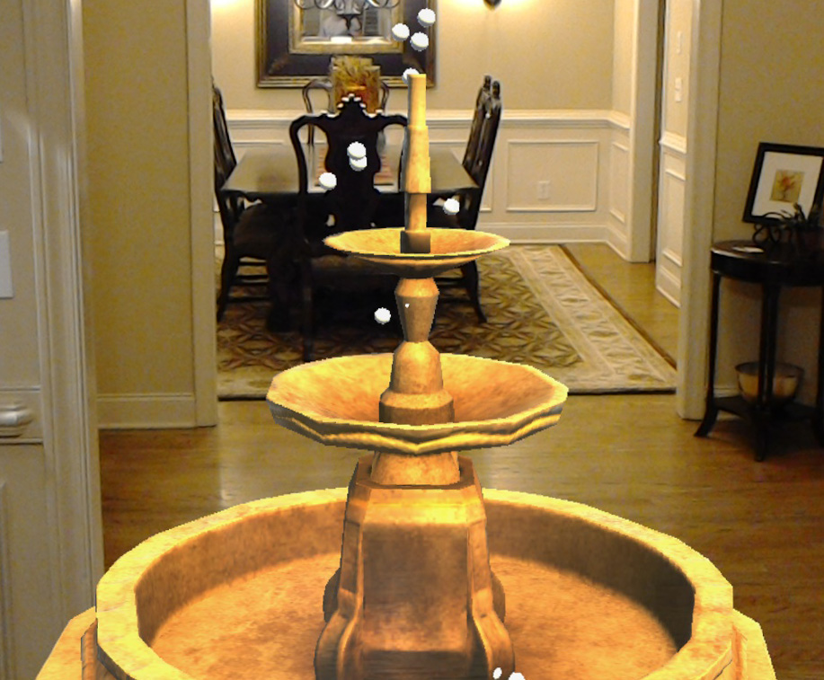
A virtual fountain in my foyer!
Of course, you can go much deeper with Unity and build much more complex scenes. This is a start, and it conveys the critical information you need to set up a project, deploy it to a HoloLens, and experience holographic applications first-hand. For more information, and to discover additional resources for learning Unity and Windows Holographic, refer to https://developer.microsoft.com/en-us/windows/holographic/unity_development_overview.
Summary
In this hands-on lab you learned how to:
- Configure HoloLens for application development
- Install and configure a development environment for building holographic applications
- Create a Unity project and configure it to support Windows Holographic
- Add objects to a scene and attach scripts to make them interactive
- Deploy to a HoloLens and make the scene come alive
Developing applications for the Windows Holographic platform is an exciting and rewarding endeavor. Holographic development can be daunting, especially for those who are new to 3D systems, but luckily, Unity features robust support for the platform and a diverse assortment of assets from which to compose scenes. Once you've mastered the basics of Unity itself, you will find it much easier to build immersive and interactive holographic applications.
Copyright 2016 Microsoft Corporation. All rights reserved. Except where otherwise noted, these materials are licensed under the terms of the MIT License. You may use them according to the license as is most appropriate for your project. The terms of this license can be found at https://opensource.org/licenses/MIT.